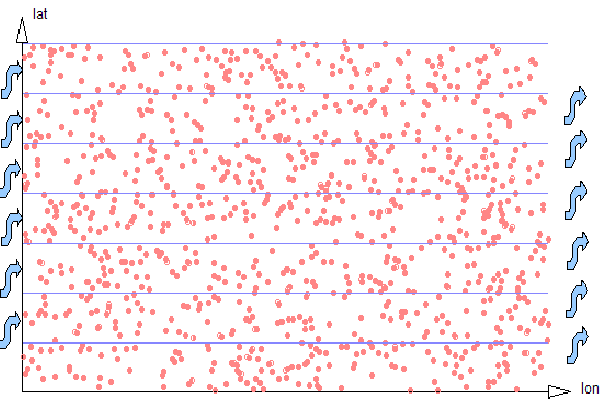
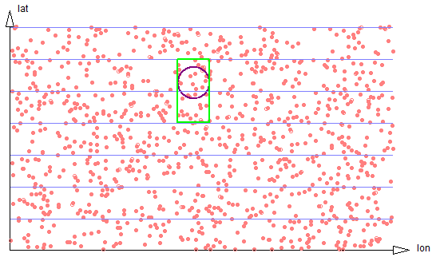
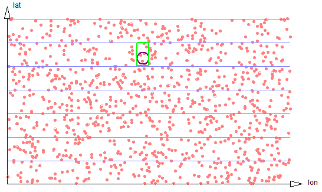
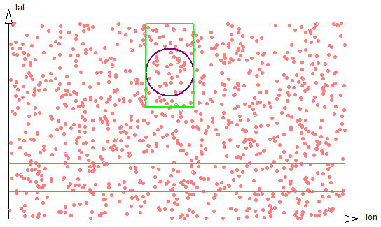
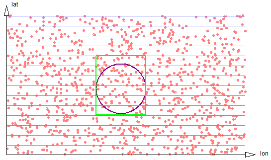
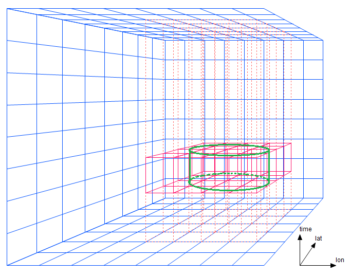
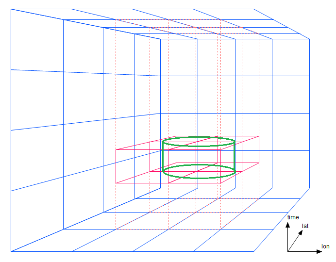
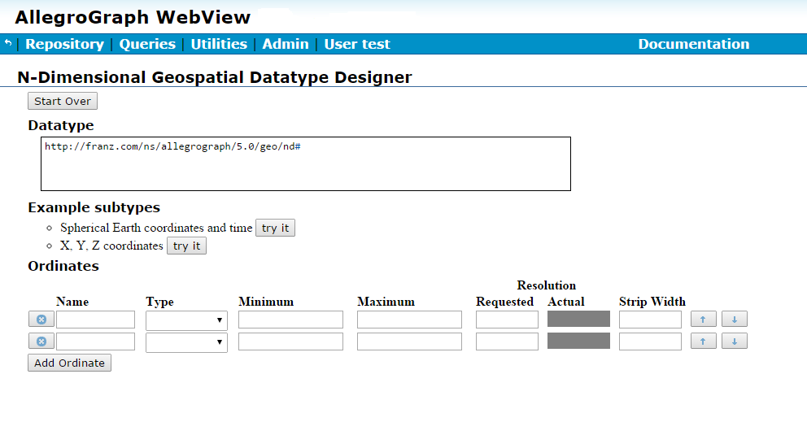

Introduction
AllegroGraph provides a novel mechanism for efficient storage and retrieval of multi-dimensional data, and spatial data in particular. We often refer to this kind of data as "geospatial" and will do so in this document, although that term refers specifically to positions on or around the earth's surface. AllegroGraph supports a more general notion of N-dimensional ordinate systems that could be used in non-geo fields such as semiconductor manufacturing and biology.
This document gives an overview of the N-dimensional (nD) geospatial facility. It is the first thing to read about nD, and prepares the reader for the N-dimensional Geospatial Usage Guide document, a practical tutorial which illustrates defining an nD datatype using AGWebView and making queries on sample data.
To use the geo implementation effectively one must understand the principles under which it operates.
A database administrator (DBA) should start by considering with how the data will be retrieved (queried), as only that consideration will inform how the data should best be stored. This is especially true when defining a geospatial encoding. While the usual datatype encodings such as xsd:float denote only a single and obvious data encoding, nD provides an essentially unbounded family of encodings, each supporting different sets of ordinates and optimized for particular kinds of searches.
Two Dimensional encoding
We will start the explanation using two-dimensional coordinates and then generalize to higher dimensions. We will use spherical coordinates, i.e. latitude and longitude, but the ordinates in a nD encoding do not all need to be spatial. For example, it could make sense to define a six-dimensional encoding with latitude, longitude, altitude, data-time, pressure, and temperature. We will use "geospatial" to refer informally even to encodings that contain no spatial ordinates.
Suppose we are interested in all data within a given radius of a certain point. We start by examining all the data within a square bounding box and then filter out all data within that box but more distant than the radius from the specified point.
Figure 2-1: 2d proximity
A 2-dimensional encoding will encode latitude (lat) and longitude (lon) ordinates into a single UPI (a Unique Part Identifier, see here in the AllegroGraph Introduction). It divides the most-significant ordinate (lat) into strips of a known width, with the DBA choosing the strip size to be similar to the expected dimension of a typical search region. In other words, if the DBA expects to be searching for all coordinates within a 1 kilometer bounding box, the width of the lat strips would be chosen as 1 kilometer. Geospatial UPIs are then linearly sorted, first on the latitude strip, next on the entire longitude ordinate, and finally on the remainder of the latitude ordinate.

Figure 2-2: 2d Strips
What advantage does this provide? Examining data with a known lon range within a single lat strip is linear and easily optimized by AllegroGraph, like any other kind of linear range query. So the geospatial UPI representation transforms an area search into a traversal of a small number of short linear ranges, and linear traversals are something computers are very efficient at doing. The effect on performance is that retrieval speed for all data within a local region is proportional to the number of data items in the result set, and is relatively independent of the size of the whole store.
The limitation of the strip strategy of the geospatial UPI datatype is that the DBA creating the dataset must know in advance something about how the data will be queried, i.e. the typical width of regions of interest. This is the cost of achieving near-linear-time performance with the number of data in the result set. Fortunately, this estimate does not need to be exact. Performance is best if the strip width is similar to the bounding-box height, but degrades only gently (i.e. linearly) with the number of strips that must be examined, or similarly if the strip width is much smaller than the bounding-box width. Even an order of magnitude error will not reduce performance so severely as to make the data unusable. (A more detailed exploration of this is below.) If expected use covers a very large spread of ranges, then the data could also be saved multiple times with different strip widths.
There are currently three kinds of proximity search supported. The radial proximity search, shown in Figures 2-3 through 2-6, first computes the bounding box of the circle, then determines the regions of the several strips that intersect that bounding box, and then traverses those data filtering out those outside the specified radius.
A bounding-box search works similarly, except uses a different filter that eliminates data outside the specified bounding box.
A polygon region search also first determines the bounding box of the polygon, determines the regions of strips that need to be traversed, and filters for points within the given polygon.
There are two components to the cost of a proximity search, and it is important to understand them. One cost is associated with the amount of data that must be traversed and filtered. This cost is proportional to the density of data within the traversed strip regions. The other cost is the overhead of establishing cursors to access and traverse each separate strip, and possibly paging those index regions of the triple store into memory. (A cursor is an object that allows iterating over triples that satisfy a query. See here in AllegroGraph Introduction for more information.)
The magnitudes of these separate costs is hard to predict. If the data are dense -- that is, if there are a large number of data within each strip region -- then the cost of accessing the separate strips could be small compared to the cost of examining each datum. If the data are sparse -- if there are only a few data within each strip segment -- the cursor cost could dominate. It is difficult to give firm guidance about selecting strip widths. If geospatial search performance will be a critical feature of an applications, or if the database will be subject to extreme scaling pressure, it may be useful to experiment with performance benchmarks on real or synthesized data. Understanding these costs will be even more significant when higher dimensional spaces are considered.
In two dimensions, the optimum strip width will be equal to the usual diameter of a search region. In that case a search will require traversing small portions of just two strips, The ratio of the number of data points that need to be examined and filtered on radial distance will be 8/pi. See figure 2-3.

Figure 2-3: Exact circle strips
If the search region is much smaller, it will often be the case that only a single strip needs be traversed. But the proportion of data scanned to the size of the result set will be smaller, so the search is less efficient. See figure 2-4.

Figure 2-4: Small circle touches only one strip
If the size of the search region is large compared to the strip width, the proportion of data scanned to the size of the result set stays well behaved, approaching 4/pi, but the number of separate strip regions that must be scanned increases, harming efficiency. See figure 2-5.

Figure 2-5: Larger circle spans three strips
If the discrepancy is very large (see figure 2-6), the number of strips grows linearly.

Figure 2-6: Very large circle spans six strips
Nonetheless, in two dimensions the performance of proximity searches decreases gently. Suppose we have a flat area with X and Y coordinates (such as a city). Even if the strip size for a particular geospatial ordinate is as much as an order of magnitude away from the Y range used in a particular search, in practice the strip approach is tremendously more efficient than direct X-Y search even for huge databases. If it is anticipated that data must be searched using widely different ranges at different times, then the data can be duplicated in the database using multiple datatype encodings with different strip sizes. For example, if we are storing cell phone location data, and sometimes we wanted to find cell phone location records within a 100 meter radius of a specific location, and other times we wanted to find calls within a 10 kilometer radius of that location, then it would make sense to record the data with multiple separate triples.
Extension to higher dimensions
The two dimensional approach extends naturally to three and higher dimensions. Instead of organizing data into strips it is stored in 3D or higher-order prisms.
For a simple lon/lat/time proximity search, if the prism dimensions are exactly the same as the search diameter, only short segments of four prisms must be traversed. The cylindrical region in figure 3-1 contains data within a certain central radius and within a certain time bound. (A bounding box in three dimensions would appear as a rectangular solid in this diagram.)
Figure 3-1: A bounding boxes spanning four prisms
Note that instead of having to traverse just two strips as in the two-dimensional case, AllegroGraph needs to traverse four prisms. This portion of the cost -- the number of prism regions that must be traversed -- increases with a power one less than the dimensionality. Now suppose the search diameter is twice as large as the prism width (figure 3-2).

Figure 3-2: A bounding boxes spanning 16 prisms
The number of prisms increases with the square of the discrepancy between radius and prism width. (A few prisms could perhaps be eliminated by clever geometric heuristics.) The cost of underestimating an ordinate strip width (prism width) increases exponentially in the number of dimensions. If the width had been estimated more accurately, efficiency will be less affected.

Figure 3-3: Larger bounding boxes
This suggests that in higher dimension subtypes, the best strategy will be to overestimate strip widths, as this will reduce the number of prisms that must be traversed. Again, experimentation with test data will be more reliable than theory.
The nD facility can handle higher dimensions, but diagrams are hard to draw. The algorithm has no upper limit but as implemented, all the ordinate values must be packed into 80 binary bits, so at most 80 ordinates (with one bit of data each) can be supported. The effective limit is, of course, much lower.
Units and Ordinate Types
Each nD ordinate will be one of six types, explained below:
- latitude
- longitude
- altitude
- time
- cartesian
- general/other
Ordinates of type latitude, longitude, and cartesian are the ones that participate in proximity queries. A datatype with either a latitude or a longitude type ordinate must have both, and that datatype may not have any cartesian ordinates. Spatial proximity queries (inCircle, inBoundingBox, or inPolygon) against such a datatype will assume haversine (spherical) distances. If a datatype has any cartesian type ordinates, it must have at least two, and spatial queries against it will use N-dimensional cartesian distances.
All other ordinate types are compared against plain minimum/maximum bounding box limits. A proximity query must include those minimum and maximum limits. The general/other type is anything not already described. The value of general/number is a number.
For most nD ordinates the ordinate value is either dimensionless or in an implicit unit known to the programmer but with which nD need not be concerned.
The latitude and longitude ordinates are the exception. They have units of degrees, but these have no intrinsic relationship with distance (compare the surface of a basketball and the surface of the earth). If an inCircle query specifies a unit of km (the default) or miles, then an inCircle query assumes distances on the earth's surface, but for any other sphere the normal unit of distance should be the radian, which is a meaningful distance unit on the surface of a sphere regardless of the radius of that sphere.
All other typed ordinates in proximity queries are tested against the bounding box bounds in that dimension in a bounding box. For example, if we have a 4D datatype with ordinates latitude, longitude, altitude, and time, we could make an inCircle query with these parameters (here ignoring the details of syntax for the different languages in which the query might be expressed):
latitude 34.649
longitude -127.362
radius 1
units "km"
altitude-min 2500
altitude-max 5000
time-min "2014-08-14T11:37:00Z"
time-max "2014-08-14T11:39:30Z"
This describes a vertical cylinder, 1 km in radius, between 2500 and 5000 in altitude, during the given 2 minute 30 second time interval. Each ordinate with its own bounding limits are completely independent of one another.
The type of each ordinate is specified at the time the nD datatype is defined, but for convenience ordinates named "latitude", "longitude", or "time" will automatically default to the like-named type unless a different type is specified. Default type is general/other.
On externalization, if a datatype has latitude, longitude, and optionally altitude, nD prints using ISO 6709 format. If the datatype has a time ordinate, it is printed using ISO 8601. If there are both, the two representations are concatenated (time last), separated by a caret (`^'). These special ordinates are printed at the start of the string representation -- otherwise, all ordinates are printed in ordinate order. Printing these special ordinates at the start of the externalized string facilitates efficient recognition on re-import.
On input the geospatial parser accepts the above special formats, or accepts all ordinates in real-number representation. Ordinates may appear in any order -- the significance order within the encoding will always be preserved upon internalization.
All ordinates are treated as analog quantities and appear as decimal real numbers. However, they are not stored as machine floats (that would use up too many bits) but as values based on the maximum, minimum, and resolution. Therefore, values appear as approximations (generally different from what is entered). This is standard for the computer representation of floats but you may find the the difference to be greater than what you (at first) expect. After the first internalization, the externalized values should be stable, and the string representation of the nD datum should round trip.
There is no nD support for ordinates with exact integer "enum" values. Integer enum ordinate values can be emulated with reasonable efficiency by allocating enough resolution to the ordinate to guarantee a stored value will always be significantly closer than 0.5 from the desired value, and rounding the value upon retrieval.
nD string formats
In this section, we describe the nD literal string formats when nD data is ingested or externalized. Keep in mind that a literal string will be recognized and ingested as an nD literal (rather than as a string) only if an applicable datatype or predicate mapping has been established. See automate-nd-datatype-mappings.
The datatype has only :default or :cartesian ordinates
The simplest case is an nD datatype that has only :default or :cartesian type ordinates. The externalized literal string will contain the several ordinate values in order of precedence, which is the same order in which they appear in the datatype definition. Each ordinate will start with the & character, the name of the ordinate, an =, and the ordinate value as a float. This same format is used for ingest, except that the ordinates are accepted in any order. The letter e may appear as an exponent marker in the usual float syntax.
So a simple 3-dimension Cartesian x/y/z literal might be exported this way:
"&x=10.0&y=-4.2e1&z=3.1415911088501502" In the section Why actual resolution differs from requested in N-dimensional Geospatial, we discuss why values ingested are modified to fit in the available number of bits. This means that the encoded ordinate values only approximate the numeric values passed to the encoder. The quantization of an ordinate value will generally be different than the lexical number from which it was initially encoded. For example, this N-triples datum
"&x=10.0&y=-4.2e1&z=3.1415911088501502"^^<http://franz.com/ns/allegrograph/5.0/geo/nd#_x_ca_-1.+2_+1.+2_+1.-4_+1.+0_y_ca_-1.+2_+1.+2_+1.-4_+1.+0_z_ca_-1.+2_+1.+2_+1.-4> or simply
"&x=10.0&y=-4.2e1&z=3.1415911088501502" if the appropriate nD predicate encoding were in effect would be quantized and later externalized as
"&x=10.0&y=-42.0&z=3.1415889018427947" The externalize/ingest cycle is designed so that ordinate values will not wander thereafter over additional round trips, although this cannot be guaranteed in all extreme cases.
The nD quantization of lexical values into a finite number of bit representations is similar to the quantization that happens in converting lexical character representations of fractional numbers into binary floating point. For example, tbe number 0.1 cannot be represented exactly in IEEE floating point; nor in general can it be represented in an nD ordinate encoding. The conceptual model for nD data is that all ordinate values are "analog" approximations of real-world values, such as might be obtained from a necessarily-imprecise clock, GPS, or transducer.
The datatype has spherical ordinates
Various special-case syntaxes are supported if an nD datatype includes latitude-longitude and/or time ordinates. These syntaxes provide some degree of human readability.
Ordinates of type :latitude, :longitude, :altitude, and :time may be treated specially. If a datatype has a single :latitude and a single :longitude, and optionally a single :altitude, the datatype will be externalized using ISO6709 fractional decimal syntax. If additionally there is a single :time ordinate, it will be appended to this string in ISO8601 format, separated by a ^ character. This portion of the externalization will always appear at the start of the literal syntax -- this is for human readability. Any additional :default ordinates will follow.
For example, this literal string mapped to an appropriate nD datatype
"-24.2-123.4^2014-06-15T08:00:00&pressure=0.9839" might be quantized and then externalized as
"-24.20020716188222-123.40003015681543^2014-06-15T14:59:59,0027952194Z&pressure=0.9838956902557977" The stored value is represented as exactly as possible (given the stored value is binary and the printed value is decimal), which is why there are so many fractional digits. The application can present the value in a more human-readable form if desired.
On input the ISO6709 parser will recognize and accept either +/-DDMMSS.F*+/-DDDMMSS.F* or +/-DD.F*+/-DDD.F* lexical format, optionally including an :altitude. The decimal point and arbitrary number of fractional digits are optional in the first syntax.
Given the appropriate nD datatype definition, all the following literal strings would read as the same nD literal:
"+34.00-123.50^2015-07-24T08:00:00Z&pressure=0.98"
"+34.00-123.50&t=2015-07-24T08:00:00Z&pressure=0.98"
"&lat=34.00&lon=-123.50&t=2015-07-24T08:00:00Z&pressure=0.98"
"&lat=34.0&lon=-123.5&t=2015-07-24T08:00:00+00:00&pressure=0.98000"
"&pressure=0.98&lon=-123.50&lat=34.00&t=3646713600"
"&pressure=0.98&lon=-123.50&lat=34.00&t=3.646713600e9" If ISO syntax is used, the ISO ordinates must appear at the start of the literal string. This restriction allows faster ingest parsing because the format is determined very quickly.
AGWebView Datatype Designer
New to the nD geospatial facility is an interactive design tool integrated into WebView. The designer is illustrated just below, but see here in the N-dimensional Geospatial Usage Guide and Example document for details.

Figure 5-1: The designer in WebView
nD Geospatial Automation
New repositories have geospatial automation enabled. This means that loading a geospatial triple with its type specified will automatically install the datatype and associate the predicate of the triple with that datatype. See nD Geospatial Automation in the N-dimensional Geospatial Usage Guide and Example document for details.
SPARQL magic properties
The SPARQL magic properties for nD geospatial are listed here in SPARQL Magic Properties, under the heading N-dimensional Geospatial. There is a brief note about the nD geospatial magic properties earlier in that document. Note there are also 2-d geospatial magic properties. These do not apply to nD geospatial.
The Lisp interface
Various Lisp functions relate to nD geospatial. They are described here in the Lisp Reference.
Further reading - a call location example
The N-dimensional Geospatial Usage Guide tutorial provides a practical example using the nD facility in AllegroGraph.